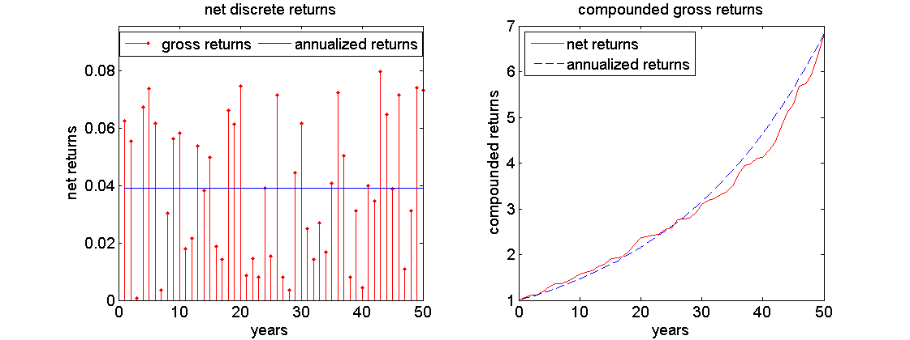
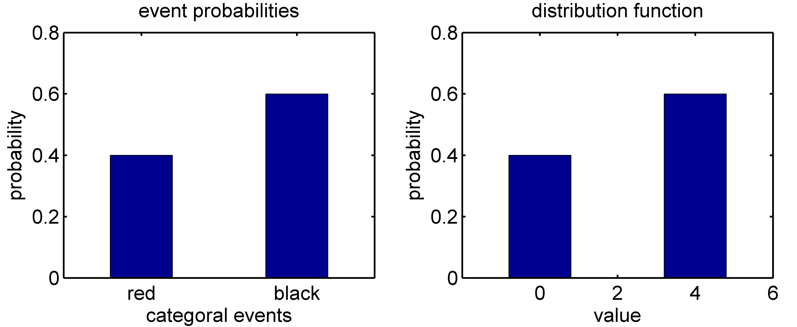
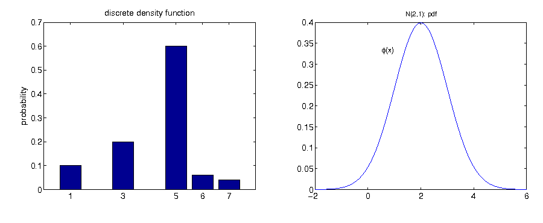
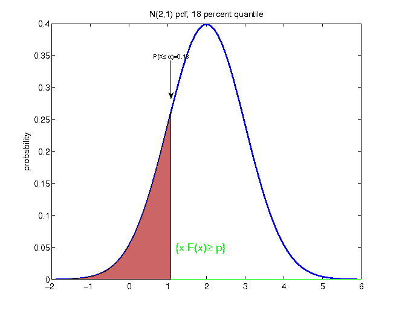
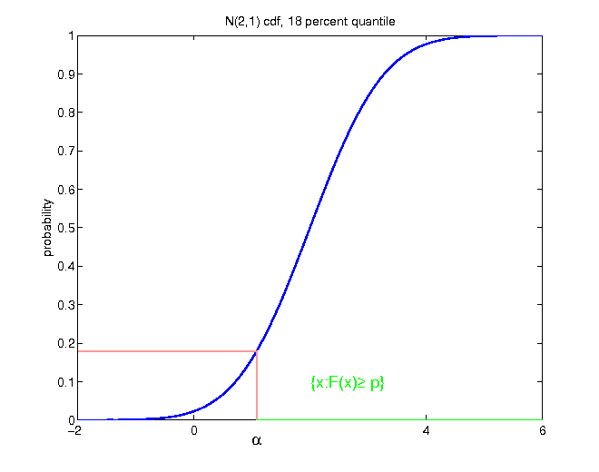
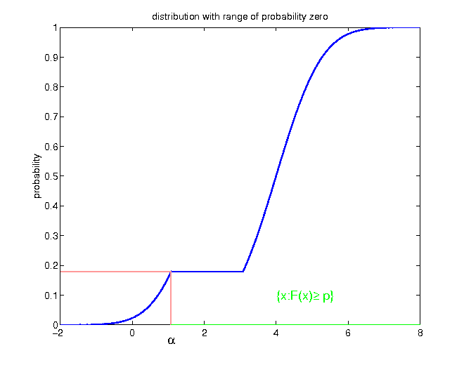
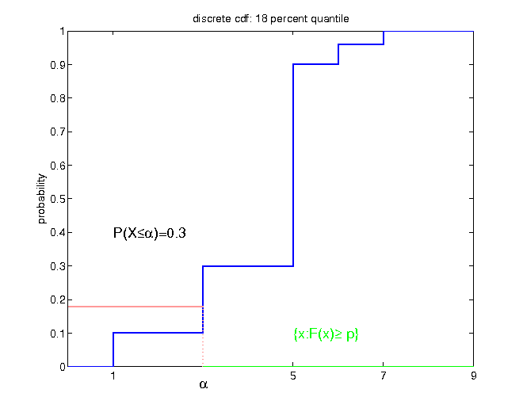

Interpretation: If the bank were compounding interest rates continuously, the nominal interest rate r would equal the logarithmic effective rate.
Also:
if rlog; eff = r for continuous compounding,
and continuous compounding leads to almost identical end of period wealth as simple compounding (see table above)
the logarithmic transformation rlog = ln(1 + r) does change the value only marginally: rlog ≈ r
Conclusion
In other words:
we can interpret log-interest rates as roughly equal to simple rates
still, log-interest rates are better to work with, as they increase linearly through aggregation over time
Conclusion
But: if interest rates get bigger, the approximation of simple compounding by continuous compounding gets worse!
ln(1 + x) = x for x = 0
ln(1 + x) ≈ x for x ≠ 0
Prices and returns
Returns on speculative assets
while interest rates of fixed-income assets are usually known prior to the investment, returns of speculative assets have to be calculated after observation of prices
returns on speculative assets usually vary from period to period
let Pt denote the price of a speculative asset at time t
Investor A and investor B both made one investment each. While investor A was able to increase his investment sum of 100 to 140 within 3 years, investor B increased his initial wealth of 230 to 340 within 5 years. Which investor did perform better?
Exercise: solution
calculate mean annual interest rate for both investors
conclusion: while the case of discrete returns involves calculation of the n-th root, the continuous case is computationally less demanding
while continuous returns differ from their discrete counterparts, the ordering of both investors is unchanged
keep in mind: so far we only treat returns retrospectively, that is, with given and known realization of prices, where any uncertainty involved in asset price evolutions already has been resolved
Comparing different investments
comparison of returns of alternative investment opportunities over different investment horizons requires computation of an average gross return $\bar{R}$ for each investment, fulfilling:
the annualized gross return is not an arithmetic mean, but a geometric mean
Example

Left: randomly generated returns between 0 and 8 percent, plotted against annualized net return rate. Right: comparison of associated compound interest rates.
The annualized return of 1.0392 is unequal to the simple arithmetic mean over the randomly generated interest rates of 1.0395!
Example
two ways to calculate annualized net returns for previously generated random returns:
given that prices / returns are already known, with no uncertainty left, continuous returns are computationally more efficient
discrete returns can be calculated via a detour to continuous returns
as the transformation of discrete to continuous returns does not change the ordering of investments, and as logarithmic returns are still interpretable since they are the limiting case of discrete compounding, why shouldn't we just stick with continuous returns overall?
however: the main advantage only crops up in a setting of uncertain future returns, and their modelling as random variables!
Importance of returns
Why are asset returns so pervasive if asset prices are the real quantity of interest in many cases?
Non-stationarity
Most prices are not stationary:
over long horizons stocks tend to exhibit a positive trend
distribution changes over time
Consequence
historic prices are not representative for future prices: mean past prices are a bad forecast for future prices
Returns
returns are stationary in most cases
⇒ historic data can be used to estimate their current distribution
The central limit theorem could justify modelling logarithmic returns as normally distributed:
returns can be decomposed into summation over returns of higher frequency: e.g. annual returns are the sum of 12 monthly returns, 52 weakly returns, 365 daily returns,...
The central limit theorem states:
Independent of the distribution of high frequency returns, any sum of them follows a normal distribution, provided that the sum involves sufficiently many summands, and the following requirements are fulfilled:
the high frequency returns are independent of each other
the distribution of the low frequency returns allows finite second moments (variance)
this reasoning does not apply to net / gross returns, since they can not be decomposed into a sum of lower frequency returns
keep in mind: these are only hypothetical considerations, since we have not seen any real world data so far!
Probability theory
randomness: the result is not known in advance
probability theory: captures randomness in mathematical framework
Probability spaces and random variables
sample spaceΩ: set of all possible outcomes or elementary events ω
Examples: discrete sample space:
roulette: Ω1 = {red, black}
performance: Ω2 = {good, moderate, bad}
die: Ω3 = {1, 2, 3, 4, 5, 6}
Examples: continuous sample space:
temperature: Ω4 = [ − 40, 50]
log-returns: Ω5 = ] − ∞, ∞[
Events
a subset A ⊂ Ω consisting of more than one elementary event ω is called event
Examples
"at least moderate performance":
$$\begin{equation*}
A=\left\{ \mbox{good,moderate}\right\} \subset\Omega_{2}
\end{equation*}$$
If the performance happens to be ω = {good}, then also the event A = "at least moderate performance" has occured, since ω ⊂ A.
Probability measure
A real-valued set function ℙ : ℱ → ℝ, with properties
ℙ(A) > 0 for all A ⊆ Ω
ℙ(Ω) = 1
For each finite or countably infinite collection of disjoint events (Ai) it holds: ℙ( ∪ i ∈ IAi) = ∑i ∈ Iℙ(Ai)
⇒ quantifies for each event a probability of occurance
Definition
The 3-tuple {Ω, ℱ, ℙ} is called probability space.
Random variable
instead of outcome ω itself, usually a mapping or function of ω is in the focus: when playing roulette, instead of outcome "red" it is more useful to consider associated gain or loss of a bet on "color"
conversion of categoral outcomes to real numbers allows for further measurements / information extraction: expectation, dispersion,...
Definition
Let {Ω, ℱ, ℙ} be a probability space. If X : Ω → ℝ is a real-valued function with the elements of Ω as its domain, then X is called random variable.
Example
random variable with discrete values
Density function
a discrete random variable consists of a countable number of elements, while a continuous random variable can take any real value in a given interval
a probability density function determines the probability (possibly 0) for each event
Discrete density function
For each xi ∈ X(Ω) = {xi|xi = X(ω), ω ∈ Ω}, the function
In contrast, the values of a continuous density function f(x), x ∈ {x|x = X(ω), ω ∈ Ω} are not probabilities itself. However, they shed light on the relative probabilities of occurrence. Given f(y) = 2 ⋅ f(z), the occurrence of y is twice as probable as the occurrence of z.
Example

Cumulative distribution function The cumulative distribution function (cdf) of random variable X, denoted by F(x),
indicates the probability that X takes on a value that is lower than or equal to x, where x is any real number. That is
divides distribution in two parts, with exactlyp * 100percent of the probability mass of the distribution to the left in the continuous case: random draws from the given distribution F would fall p * 100 percent of the time below the p-quantile
for discrete distributions, the probability mass on the left has to be at least p * 100 percent:
$$\begin{equation*}
F\left(F^{-1}\left(p\right)\right)=\mathbb{P}\left(X\leq F^{-1}\left(p\right)\right)\geq p
\end{equation*}$$
Example

Example: cdf

Example

Example

Summary: information reduction
Incomplete information can occur in two ways:
a coarse filtration
only values of some measures of the underlying distribution are known (mean, dispersion, quantiles)
Any reduction of information implicitly induces that some formerly distinguishable distributions are undistinguishable on the basis of the limited information.
tradeoff: reducing information for better comprehensibility / comparability, or keeping as much information as possible